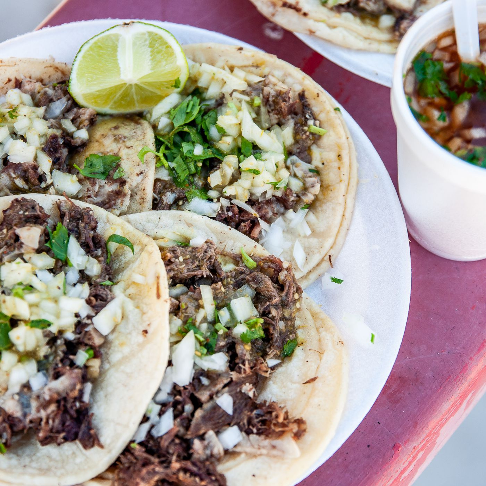

Chicken Fajitas

Description
Tacos are good and you must consume them. We will outline the appropiate
preparations necessary to manufacture this dish with perfection and efficiency.
CONSUME TACO.
Ingredients
- ALL Ground Meat
- Infinite onion
- Salsa
- God's Oil
- Seasoning
- tortillas
- Cilantro
Steps
- PRAISE THE MEAT FOR SUSTENANCE
- Drizzle meat with oil and eason the meat with your favorite seasonings
- Chop the onions and cilantro
- Engorge meat with flame in pan
- Cook the torts
- Add the cooked meat, vegetables and sauce to the tortilla.low heat
Done. CONSUME.